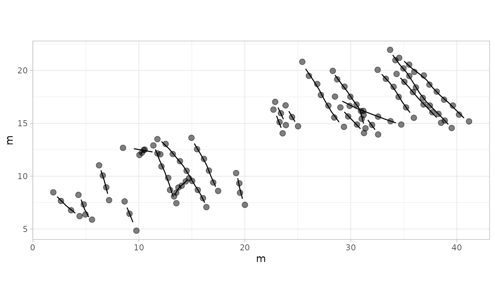

Introduction
This vignette demonstrates how to load, process, and analyze trackway data using the QuAnTeTrack package. We will walk through two datasets:
Paluxy River Dataset
Tracks without missing footprints. This dataset
represents dinosaur tracks from the Paluxy River site, described by
Farlow et al. (2012).
Source: Farlow, J. O., O’Brien, M., Kuban, G. J.,
Dattilo, B. F., Bates, K. T., Falkingham, P. L., & Piñuela, L.
(2012). Dinosaur Tracksites of the Paluxy River Valley (Glen Rose
Formation, Lower Cretaceous), Dinosaur Valley State Park, Somervell
County, Texas. In Proceedings of the V International Symposium about
Dinosaur Palaeontology and their Environment (pp. 41-69). Burgos: Salas
de los Infantes.
Raw Data Format
QuAnTeTrack accepts raw data in the form of .TPS files containing footprint coordinates. Each track should be recorded as a different image within the .TPS file.
Requirements
-
Footprint coordinates should be digitized in
equivalent positions for each track.
-
Tracks with missing footprints are acceptable and
will be interpolated as needed by the package
functions.
- It is recommended to digitize the coordinates using
the TPS software suite, particularly:
-
TPSUTIL (Rohlf, 2008) - for file
manipulation and data conversion.
- tpsDig (Rohlf, 2009) - for digitizing landmarks and outlines.
-
TPSUTIL (Rohlf, 2008) - for file
manipulation and data conversion.
TPS Software Citation
Rohlf, F. J. 2008. TPSUTIL. Version 1.40. Department of Ecology and Evolution, State University of New York.
Available at: https://sbmorphometrics.org/Rohlf, F. J. 2009. tpsDig. Version 2.14. Department of Ecology and Evolution, State University of New York.
Available at: https://sbmorphometrics.org/
Step 1: Loading and Converting Data
The tps_to_track() function is a
fundamental tool for converting raw .TPS files containing
digitized trackway data into usable track objects within the
QuAnTeTrack package.
What this function does:
-
Reads .TPS files: It processes digitized data files
where each track is represented as a series of coordinates (landmarks)
saved as different images. These files are typically generated using
software like TPSUTIL or tpsDig.
-
Converts data to a track object: The output is a
structured object in R that contains two main components:
-
Footprints: The original footprint data, stored as
data frames with coordinates and metadata.
-
Trajectories: Interpolated trajectories calculated
between consecutive footprints to estimate the paths taken by the
trackmaker.
-
Footprints: The original footprint data, stored as
data frames with coordinates and metadata.
-
Handles missing footprints (if applicable): When
dealing with incomplete tracks (e.g., footprints lost due to erosion or
gaps in the trackway), the function can interpolate these gaps if the
argument
missing = TRUEis used.
Explanation of Arguments:
-
scale: This argument is a scaling factor that converts digitized coordinates to real-world measurements (e.g., meters).
-
missing: A logical value indicating whether some footprints are missing (TRUE) or not (FALSE).
-
NAs: A matrix specifying which footprints are missing, if applicable. This is set toNULLif no footprints are missing.
Here, the TPS files (PaluxyRiver.tps and
MountTom.tps) are loaded using the
system.file() function to ensure compatibility across
systems. They are then converted to track objects using the
tps_to_track() function. The scale argument is
used to set the coordinate scaling factor. For the
PaluxyRiver dataset, no footprints are missing, so the
missing argument is set to FALSE and
NAs = NULL. For the MountTom dataset, some
footprints are missing, so the missing argument is set to
TRUE, and the missing footprints are specified using the
NAs matrix. Additionally, the R.L.side
argument is provided to specify the side of the first footprint of each
track (either “R” for right or “L” for left).
For users working with their own data, replace
system.file("extdata", "PaluxyRiver.tps", package = "QuAnTeTrack")
and
system.file("extdata", "MountTom.tps", package = "QuAnTeTrack")
with the file paths to your .TPS files (e.g.,
"C:/path/to/your/PaluxyRiver.tps" and
"C:/path/to/your/MountTom.tps").
PaluxyRiver <- tps_to_track(
system.file("extdata", "PaluxyRiver.tps", package = "QuAnTeTrack"),
scale = 0.004341493,
missing = FALSE,
NAs = NULL
)
MountTom <- tps_to_track(
system.file("extdata", "MountTom.tps", package = "QuAnTeTrack"),
scale = 0.004411765,
missing = TRUE,
NAs = matrix(c(7, 3), nrow = 1, ncol = 2),
R.L.side = c(
"R", "L", "L", "L", "R", "L", "R", "R", "L", "L", "L", "L", "L",
"R", "R", "L", "R", "R", "L", "R", "R", "R", "R"
)
)Step 2: Plotting Tracks
The plot_track() function provides
flexible plotting options to visualize the loaded track data. You can
generate plots with default settings or focus on specific aspects of the
track data, such as footprints or trackways.
Plotting with Default Settings
By default, plot_track() displays the
complete track, including both footprints and interpolated trajectories.
This is useful for getting a general overview of the track and its
corresponding interpolated pathways.
plot_track(PaluxyRiver)
plot_track(MountTom)
Plotting Footprints Only
To visualize only the footprint data without the interpolated
trajectories, use the plot = "Footprints" argument. This is
particularly useful when you want to inspect the original footprint
positions without the influence of interpolated tracks.
plot_track(PaluxyRiver, plot = "Footprints")
plot_track(MountTom, plot = "Footprints")
Plotting Trackways Only
If you want to focus on the interpolated trackways without displaying
the footprints, use the plot = "Tracks" argument. This
visualization helps analyze the continuity and pattern of movement.
plot_track(PaluxyRiver, plot = "Tracks")
plot_track(MountTom, plot = "Tracks")
The plot_track() function also allows for various
customizations to enhance visualization. Parameters that can be
customized include:
-
plot.labels: Logical value indicating whether to plot labels for each track.
-
labels: Custom labels to be displayed for the tracks.
-
cex.l: Size of the labels.
-
box.p: Size of the boxes around the labels.
-
alpha.l: Transparency level of the labels.
-
colours: Vector of colors to customize the footprints of different tracks.
-
shape.f: Vector specifying the shapes used for footprints.
Below are some examples illustrating these customizations:
labels <- paste("Track", seq_along(MountTom[[1]]))
plot_track(MountTom, plot.labels = TRUE, labels = labels, cex.l = 4, box.p = 0.3, alpha.l = 0.7)
plot_track(PaluxyRiver, plot = "Footprints", colours = c("purple", "orange"), shape.f = c(15, 18))
Step 3: Extracting Track Parameters
The track_param() function is used to
extract various parameters from the loaded track
objects. This includes information about individual footprints and their
spatial relationships, which can be useful for further analysis.
params_paluxy <- track_param(PaluxyRiver)#> $Track_1
#> $Track_1$Turning_angles
#> [1] 83.36749 77.21330 80.06835 79.46614 74.64986 73.75563 73.91299 73.54942
#> [9] 72.64598 79.29432 87.32457 83.82411 82.64091 83.85337 82.06724 78.16842
#> [17] 79.91062 84.65694 88.34770 93.28218 98.22952 98.01709 97.67122 96.57457
#> [25] 94.50862 95.42060 96.01985 96.25904
#>
#> $Track_1$Mean_turning_angle
#> [1] 85.16786
#>
#> $Track_1$Standard_deviation_turning_angle
#> [1] 8.716076
#>
#> $Track_1$Distance
#> [1] 16.09043
#>
#> $Track_1$Length
#> [1] 16.2711
#>
#> $Track_1$Step_lengths
#> [1] 0.6577971 0.6277174 0.5663694 0.5343256 0.5740178 0.6285614 0.6032098
#> [8] 0.5749037 0.5822135 0.4440490 0.4650467 0.5851561 0.5931582 0.5676575
#> [15] 0.5347796 0.5611201 0.6195609 0.6061010 0.6775546 0.6066334 0.5307864
#> [22] 0.4669326 0.5366356 0.6446094 0.6075182 0.5974563 0.6002654 0.6769667
#>
#> $Track_1$Mean_step_length
#> [1] 0.5811108
#>
#> $Track_1$Standard_deviation_step_length
#> [1] 0.05855971
#>
#> $Track_1$Sinuosity
#> [1] 0.07738533
#>
#> $Track_1$Straightness
#> [1] 0.9888963
#>
#>
#> $Track_2
#> $Track_2$Turning_angles
#> [1] 77.67357 82.52517 77.62784 73.77659 74.96477 72.69947 74.84593
#> [8] 80.92672 84.04858 84.37223 83.13249 77.30345 73.16693 86.98721
#> [15] 78.55066 91.34262 97.33861 95.27067 91.84761 81.72095 80.07781
#> [22] 84.97592 100.83397
#>
#> $Track_2$Mean_turning_angle
#> [1] 82.86999
#>
#> $Track_2$Standard_deviation_turning_angle
#> [1] 7.941837
#>
#> $Track_2$Distance
#> [1] 15.13227
#>
#> $Track_2$Length
#> [1] 15.27567
#>
#> $Track_2$Step_lengths
#> [1] 0.5999317 0.6173971 0.6889308 0.6759706 0.6945371 0.6934507 0.6476978
#> [8] 0.5781403 0.5652701 0.5976653 0.5990828 0.5629646 0.7121273 0.8673266
#> [15] 0.6998831 0.5558637 0.5778101 0.5907702 0.6732814 0.7085351 0.7558719
#> [22] 0.7931992 0.8199620
#>
#> $Track_2$Mean_step_length
#> [1] 0.6641595
#>
#> $Track_2$Standard_deviation_step_length
#> [1] 0.08686601
#>
#> $Track_2$Sinuosity
#> [1] 0.1466281
#>
#> $Track_2$Straightness
#> [1] 0.9906128
params_mount <- track_param(MountTom)#> $Track_01
#> $Track_01$Turning_angles
#> [1] 135.4170 134.9103 139.1806 134.1905 128.4984 139.7955 143.4536 137.0192
#>
#> $Track_01$Mean_turning_angle
#> [1] 136.5581
#>
#> $Track_01$Standard_deviation_turning_angle
#> [1] 4.46736
#>
#> $Track_01$Distance
#> [1] 7.792014
#>
#> $Track_01$Length
#> [1] 7.811916
#>
#> $Track_01$Step_lengths
#> [1] 1.0716072 0.9967099 1.0056236 0.9936882 0.9780421 0.9329032 0.8594255
#> [8] 0.9739165
#>
#> $Track_01$Mean_step_length
#> [1] 0.9764895
#>
#> $Track_01$Standard_deviation_step_length
#> [1] 0.06119478
#>
#> $Track_01$Sinuosity
#> [1] 0.1073126
#>
#> $Track_01$Straightness
#> [1] 0.9974524
#>
#>
#> $Track_02
#> $Track_02$Turning_angles
#> [1] 132.9511 134.6430 134.4076 127.5257 121.4985 123.2012 131.3173 125.6057
#>
#> $Track_02$Mean_turning_angle
#> [1] 128.8938
#>
#> $Track_02$Standard_deviation_turning_angle
#> [1] 5.148772
#>
#> $Track_02$Distance
#> [1] 8.389291
#>
#> $Track_02$Length
#> [1] 8.419799
#>
#> $Track_02$Step_lengths
#> [1] 0.9161851 1.0014075 1.0560373 1.0791884 1.2159276 1.0755866 0.9956450
#> [8] 1.0798217
#>
#> $Track_02$Mean_step_length
#> [1] 1.052475
#>
#> $Track_02$Standard_deviation_step_length
#> [1] 0.08712676
#>
#> $Track_02$Sinuosity
#> [1] 0.08820136
#>
#> $Track_02$Straightness
#> [1] 0.9963766
#>
#>
#> $Track_03
#> $Track_03$Turning_angles
#> [1] 133.8065 133.7811 130.2205 132.0604
#>
#> $Track_03$Mean_turning_angle
#> [1] 132.4671
#>
#> $Track_03$Standard_deviation_turning_angle
#> [1] 1.706197
#>
#> $Track_03$Distance
#> [1] 5.076073
#>
#> $Track_03$Length
#> [1] 5.077853
#>
#> $Track_03$Step_lengths
#> [1] 1.198182 1.319885 1.404018 1.155769
#>
#> $Track_03$Mean_step_length
#> [1] 1.269463
#>
#> $Track_03$Standard_deviation_step_length
#> [1] 0.1135117
#>
#> $Track_03$Sinuosity
#> [1] 0.03584756
#>
#> $Track_03$Straightness
#> [1] 0.9996494
#>
#>
#> $Track_04
#> $Track_04$Turning_angles
#> [1] 125.9818 121.1350 125.1305 133.1314
#>
#> $Track_04$Mean_turning_angle
#> [1] 126.3447
#>
#> $Track_04$Standard_deviation_turning_angle
#> [1] 4.993546
#>
#> $Track_04$Distance
#> [1] 4.497133
#>
#> $Track_04$Length
#> [1] 4.509806
#>
#> $Track_04$Step_lengths
#> [1] 1.223971 1.139084 1.046512 1.100240
#>
#> $Track_04$Mean_step_length
#> [1] 1.127452
#>
#> $Track_04$Standard_deviation_step_length
#> [1] 0.07470601
#>
#> $Track_04$Sinuosity
#> [1] 0.09660109
#>
#> $Track_04$Straightness
#> [1] 0.9971898
#>
#>
#> $Track_05
#> $Track_05$Turning_angles
#> [1] 126.6273
#>
#> $Track_05$Mean_turning_angle
#> [1] 126.6273
#>
#> $Track_05$Standard_deviation_turning_angle
#> [1] NA
#>
#> $Track_05$Distance
#> [1] 1.146187
#>
#> $Track_05$Length
#> [1] 1.146187
#>
#> $Track_05$Step_lengths
#> [1] 1.146187
#>
#> $Track_05$Mean_step_length
#> [1] 1.146187
#>
#> $Track_05$Standard_deviation_step_length
#> [1] NA
#>
#> $Track_05$Sinuosity
#> [1] NaN
#>
#> $Track_05$Straightness
#> [1] 1
#>
#>
#> $Track_06
#> $Track_06$Turning_angles
#> [1] 133.6793 134.0478
#>
#> $Track_06$Mean_turning_angle
#> [1] 133.8635
#>
#> $Track_06$Standard_deviation_turning_angle
#> [1] 0.2605755
#>
#> $Track_06$Distance
#> [1] 2.209101
#>
#> $Track_06$Length
#> [1] 2.209112
#>
#> $Track_06$Step_lengths
#> [1] 1.082785 1.126327
#>
#> $Track_06$Mean_step_length
#> [1] 1.104556
#>
#> $Track_06$Standard_deviation_step_length
#> [1] 0.03078894
#>
#> $Track_06$Sinuosity
#> [1] 0.006119749
#>
#> $Track_06$Straightness
#> [1] 0.9999948
#>
#>
#> $Track_07
#> $Track_07$Turning_angles
#> [1] 104.5351 109.8321 126.4855 123.7244 127.0905 126.5167
#>
#> $Track_07$Mean_turning_angle
#> [1] 119.6974
#>
#> $Track_07$Standard_deviation_turning_angle
#> [1] 9.906308
#>
#> $Track_07$Distance
#> [1] 5.320692
#>
#> $Track_07$Length
#> [1] 5.38372
#>
#> $Track_07$Step_lengths
#> [1] 0.8430613 0.7152130 0.8424108 1.0210973 1.0314783 0.9304589
#>
#> $Track_07$Mean_step_length
#> [1] 0.8972866
#>
#> $Track_07$Standard_deviation_step_length
#> [1] 0.1212761
#>
#> $Track_07$Sinuosity
#> [1] 0.1483819
#>
#> $Track_07$Straightness
#> [1] 0.9882929
#>
#>
#> $Track_08
#> $Track_08$Turning_angles
#> [1] 126.1992 120.6832 117.1547 122.0179 123.9117
#>
#> $Track_08$Mean_turning_angle
#> [1] 121.9934
#>
#> $Track_08$Standard_deviation_turning_angle
#> [1] 3.409506
#>
#> $Track_08$Distance
#> [1] 5.956414
#>
#> $Track_08$Length
#> [1] 5.964889
#>
#> $Track_08$Step_lengths
#> [1] 1.243762 1.236318 1.150321 1.069273 1.265215
#>
#> $Track_08$Mean_step_length
#> [1] 1.192978
#>
#> $Track_08$Standard_deviation_step_length
#> [1] 0.08185074
#>
#> $Track_08$Sinuosity
#> [1] 0.06692552
#>
#> $Track_08$Straightness
#> [1] 0.9985792
#>
#>
#> $Track_09
#> $Track_09$Turning_angles
#> [1] -26.79077 -20.88580 -20.77225 -18.85063
#>
#> $Track_09$Mean_turning_angle
#> [1] -21.82486
#>
#> $Track_09$Standard_deviation_turning_angle
#> [1] 3.439774
#>
#> $Track_09$Distance
#> [1] 5.452531
#>
#> $Track_09$Length
#> [1] 5.460107
#>
#> $Track_09$Step_lengths
#> [1] 1.502452 1.435499 1.368359 1.153797
#>
#> $Track_09$Mean_step_length
#> [1] 1.365027
#>
#> $Track_09$Standard_deviation_step_length
#> [1] 0.1510864
#>
#> $Track_09$Sinuosity
#> [1] 0.0535709
#>
#> $Track_09$Straightness
#> [1] 0.9986127
#>
#>
#> $Track_10
#> $Track_10$Turning_angles
#> [1] -59.30028
#>
#> $Track_10$Mean_turning_angle
#> [1] -59.30028
#>
#> $Track_10$Standard_deviation_turning_angle
#> [1] NA
#>
#> $Track_10$Distance
#> [1] 1.149305
#>
#> $Track_10$Length
#> [1] 1.149305
#>
#> $Track_10$Step_lengths
#> [1] 1.149305
#>
#> $Track_10$Mean_step_length
#> [1] 1.149305
#>
#> $Track_10$Standard_deviation_step_length
#> [1] NA
#>
#> $Track_10$Sinuosity
#> [1] NaN
#>
#> $Track_10$Straightness
#> [1] 1
#>
#>
#> $Track_11
#> $Track_11$Turning_angles
#> [1] -65.30517
#>
#> $Track_11$Mean_turning_angle
#> [1] -65.30517
#>
#> $Track_11$Standard_deviation_turning_angle
#> [1] NA
#>
#> $Track_11$Distance
#> [1] 1.209107
#>
#> $Track_11$Length
#> [1] 1.209107
#>
#> $Track_11$Step_lengths
#> [1] 1.209107
#>
#> $Track_11$Mean_step_length
#> [1] 1.209107
#>
#> $Track_11$Standard_deviation_step_length
#> [1] NA
#>
#> $Track_11$Sinuosity
#> [1] NaN
#>
#> $Track_11$Straightness
#> [1] 1
#>
#>
#> $Track_12
#> $Track_12$Turning_angles
#> [1] 111.1961
#>
#> $Track_12$Mean_turning_angle
#> [1] 111.1961
#>
#> $Track_12$Standard_deviation_turning_angle
#> [1] NA
#>
#> $Track_12$Distance
#> [1] 1.201898
#>
#> $Track_12$Length
#> [1] 1.201898
#>
#> $Track_12$Step_lengths
#> [1] 1.201898
#>
#> $Track_12$Mean_step_length
#> [1] 1.201898
#>
#> $Track_12$Standard_deviation_step_length
#> [1] NA
#>
#> $Track_12$Sinuosity
#> [1] NaN
#>
#> $Track_12$Straightness
#> [1] 1
#>
#>
#> $Track_13
#> $Track_13$Turning_angles
#> [1] -134.4543 -139.9441 -128.1402 -116.2039
#>
#> $Track_13$Mean_turning_angle
#> [1] -129.6857
#>
#> $Track_13$Standard_deviation_turning_angle
#> [1] 10.2
#>
#> $Track_13$Distance
#> [1] 1.809277
#>
#> $Track_13$Length
#> [1] 1.831302
#>
#> $Track_13$Step_lengths
#> [1] 0.4913575 0.4524641 0.4178969 0.4695836
#>
#> $Track_13$Mean_step_length
#> [1] 0.4578255
#>
#> $Track_13$Standard_deviation_step_length
#> [1] 0.03101447
#>
#> $Track_13$Sinuosity
#> [1] 0.2636325
#>
#> $Track_13$Straightness
#> [1] 0.9879729
#>
#>
#> $Track_14
#> $Track_14$Turning_angles
#> [1] 104.5905 101.1270
#>
#> $Track_14$Mean_turning_angle
#> [1] 102.8588
#>
#> $Track_14$Standard_deviation_turning_angle
#> [1] 2.449041
#>
#> $Track_14$Distance
#> [1] 1.998605
#>
#> $Track_14$Length
#> [1] 1.999516
#>
#> $Track_14$Step_lengths
#> [1] 1.0507992 0.9487167
#>
#> $Track_14$Mean_step_length
#> [1] 0.9997579
#>
#> $Track_14$Standard_deviation_step_length
#> [1] 0.0721832
#>
#> $Track_14$Sinuosity
#> [1] 0.06047449
#>
#> $Track_14$Straightness
#> [1] 0.9995445
#>
#>
#> $Track_15
#> $Track_15$Turning_angles
#> [1] 114.2659 111.3107 118.9163 120.6646
#>
#> $Track_15$Mean_turning_angle
#> [1] 116.2894
#>
#> $Track_15$Standard_deviation_turning_angle
#> [1] 4.278817
#>
#> $Track_15$Distance
#> [1] 4.556698
#>
#> $Track_15$Length
#> [1] 4.56646
#>
#> $Track_15$Step_lengths
#> [1] 1.057393 1.195731 1.154191 1.159145
#>
#> $Track_15$Mean_step_length
#> [1] 1.141615
#>
#> $Track_15$Standard_deviation_step_length
#> [1] 0.05912482
#>
#> $Track_15$Sinuosity
#> [1] 0.07871941
#>
#> $Track_15$Straightness
#> [1] 0.9978623
#>
#>
#> $Track_16
#> $Track_16$Turning_angles
#> [1] 116.5651 122.1172 120.0741 121.6150 129.5226 129.5917 135.7970
#>
#> $Track_16$Mean_turning_angle
#> [1] 125.0404
#>
#> $Track_16$Standard_deviation_turning_angle
#> [1] 6.748851
#>
#> $Track_16$Distance
#> [1] 7.068614
#>
#> $Track_16$Length
#> [1] 7.109877
#>
#> $Track_16$Step_lengths
#> [1] 0.9075806 0.9584426 1.0476549 1.0982925 1.0294856 1.0591361 1.0092847
#>
#> $Track_16$Mean_step_length
#> [1] 1.015697
#>
#> $Track_16$Standard_deviation_step_length
#> [1] 0.06445766
#>
#> $Track_16$Sinuosity
#> [1] 0.08320294
#>
#> $Track_16$Straightness
#> [1] 0.9941965
#>
#>
#> $Track_17
#> $Track_17$Turning_angles
#> [1] -131.2245
#>
#> $Track_17$Mean_turning_angle
#> [1] -131.2245
#>
#> $Track_17$Standard_deviation_turning_angle
#> [1] NA
#>
#> $Track_17$Distance
#> [1] 0.3079478
#>
#> $Track_17$Length
#> [1] 0.3079478
#>
#> $Track_17$Step_lengths
#> [1] 0.3079478
#>
#> $Track_17$Mean_step_length
#> [1] 0.3079478
#>
#> $Track_17$Standard_deviation_step_length
#> [1] NA
#>
#> $Track_17$Sinuosity
#> [1] NaN
#>
#> $Track_17$Straightness
#> [1] 1
#>
#>
#> $Track_18
#> $Track_18$Turning_angles
#> [1] 107.7676 110.0561 113.7495 110.8756
#>
#> $Track_18$Mean_turning_angle
#> [1] 110.6122
#>
#> $Track_18$Standard_deviation_turning_angle
#> [1] 2.470679
#>
#> $Track_18$Distance
#> [1] 4.767794
#>
#> $Track_18$Length
#> [1] 4.771307
#>
#> $Track_18$Step_lengths
#> [1] 1.257788 1.183538 1.265235 1.064747
#>
#> $Track_18$Mean_step_length
#> [1] 1.192827
#>
#> $Track_18$Standard_deviation_step_length
#> [1] 0.09301194
#>
#> $Track_18$Sinuosity
#> [1] 0.04807342
#>
#> $Track_18$Straightness
#> [1] 0.9992637
#>
#>
#> $Track_19
#> $Track_19$Turning_angles
#> [1] 111.8959
#>
#> $Track_19$Mean_turning_angle
#> [1] 111.8959
#>
#> $Track_19$Standard_deviation_turning_angle
#> [1] NA
#>
#> $Track_19$Distance
#> [1] 1.490617
#>
#> $Track_19$Length
#> [1] 1.490617
#>
#> $Track_19$Step_lengths
#> [1] 1.490617
#>
#> $Track_19$Mean_step_length
#> [1] 1.490617
#>
#> $Track_19$Standard_deviation_step_length
#> [1] NA
#>
#> $Track_19$Sinuosity
#> [1] NaN
#>
#> $Track_19$Straightness
#> [1] 1
#>
#>
#> $Track_20
#> $Track_20$Turning_angles
#> [1] 104.3162 108.0343
#>
#> $Track_20$Mean_turning_angle
#> [1] 106.1753
#>
#> $Track_20$Standard_deviation_turning_angle
#> [1] 2.629063
#>
#> $Track_20$Distance
#> [1] 2.300393
#>
#> $Track_20$Length
#> [1] 2.301602
#>
#> $Track_20$Step_lengths
#> [1] 1.204311 1.097291
#>
#> $Track_20$Mean_step_length
#> [1] 1.150801
#>
#> $Track_20$Standard_deviation_step_length
#> [1] 0.07567463
#>
#> $Track_20$Sinuosity
#> [1] 0.06051244
#>
#> $Track_20$Straightness
#> [1] 0.9994748
#>
#>
#> $Track_21
#> $Track_21$Turning_angles
#> [1] 140.7497 134.7000
#>
#> $Track_21$Mean_turning_angle
#> [1] 137.7249
#>
#> $Track_21$Standard_deviation_turning_angle
#> [1] 4.277776
#>
#> $Track_21$Distance
#> [1] 2.325026
#>
#> $Track_21$Length
#> [1] 2.328268
#>
#> $Track_21$Step_lengths
#> [1] 1.136569 1.191699
#>
#> $Track_21$Mean_step_length
#> [1] 1.164134
#>
#> $Track_21$Standard_deviation_step_length
#> [1] 0.03898298
#>
#> $Track_21$Sinuosity
#> [1] 0.09795169
#>
#> $Track_21$Straightness
#> [1] 0.9986075
#>
#>
#> $Track_22
#> $Track_22$Turning_angles
#> [1] 118.3636 109.6538
#>
#> $Track_22$Mean_turning_angle
#> [1] 114.0087
#>
#> $Track_22$Standard_deviation_turning_angle
#> [1] 6.158744
#>
#> $Track_22$Distance
#> [1] 1.795854
#>
#> $Track_22$Length
#> [1] 1.801009
#>
#> $Track_22$Step_lengths
#> [1] 0.8172251 0.9837840
#>
#> $Track_22$Mean_step_length
#> [1] 0.9005046
#>
#> $Track_22$Standard_deviation_step_length
#> [1] 0.1177749
#>
#> $Track_22$Sinuosity
#> [1] 0.1604935
#>
#> $Track_22$Straightness
#> [1] 0.9971376
#>
#>
#> $Track_23
#> $Track_23$Turning_angles
#> [1] -9.811257
#>
#> $Track_23$Mean_turning_angle
#> [1] -9.811257
#>
#> $Track_23$Standard_deviation_turning_angle
#> [1] NA
#>
#> $Track_23$Distance
#> [1] 1.786422
#>
#> $Track_23$Length
#> [1] 1.786422
#>
#> $Track_23$Step_lengths
#> [1] 1.786422
#>
#> $Track_23$Mean_step_length
#> [1] 1.786422
#>
#> $Track_23$Standard_deviation_step_length
#> [1] NA
#>
#> $Track_23$Sinuosity
#> [1] NaN
#>
#> $Track_23$Straightness
#> [1] 1The output of track_param() is a list
containing detailed information about each track,
including step lengths, stride lengths, turning angles, and
other relevant metrics. This information can be printed
or saved for further analysis.
Step 4: Plotting Direction Data
The plot_direction() function provides
several ways to visualize directional data. This can be particularly
useful for understanding the overall movement patterns and orientation
of the tracks. Below are various plotting options with descriptions of
what each plot represents.
Boxplot of Direction Data
Boxplots provide a summary of the distribution of directions, including median, quartiles, and outliers. This visualization is useful for comparing general directionality across tracks.
plot_direction(PaluxyRiver, plot_type = "boxplot")
plot_direction(MountTom, plot_type = "boxplot")
Polar Plot of Step Directions
Polar plots show the individual step directions radiating from a central point, providing a detailed visualization of the movement patterns of the tracks.
plot_direction(PaluxyRiver, plot_type = "polar_steps")
plot_direction(MountTom, plot_type = "polar_steps")
Polar Plot of Average Directions Per Track
This plot type averages the directional data for each track, providing a simplified overview of general movement trends.
plot_direction(PaluxyRiver, plot_type = "polar_average")
plot_direction(MountTom, plot_type = "polar_average")
Faceted Polar Plot of Step Directions
Faceted plots display individual step directions for each track in separate panels, allowing for a clearer comparison of movement patterns across multiple tracks.
plot_direction(PaluxyRiver, plot_type = "faceted")
plot_direction(MountTom, plot_type = "faceted")
Further Customizations
The plot_direction() function offers
several customization options to enhance the visualization of your
data:
-
y_breaks_manual: Define custom breaks on the radial axis forpolar_averageplots. Example:plot_direction(PaluxyRiver, plot_type = "polar_average", y_breaks_manual = c(1, 2))
-
y_labels_position: Adjust the position of y-axis labels. This can be helpful when fine-tuning polar plots for presentation. Example:plot_direction(PaluxyRiver, plot_type = "polar_steps", y_labels_position = -90)
facet_labels: Provide custom labels for faceted plots to improve clarity when comparing multiple tracks.
These customization options allow you to tailor your plots to best fit your analytical needs and presentation preferences.
Boxplot of Direction Data
plot_direction(PaluxyRiver, plot_type = "boxplot")
plot_direction(MountTom, plot_type = "boxplot")
Polar Plot of Step Directions
plot_direction(PaluxyRiver, plot_type = "polar_steps")
plot_direction(MountTom, plot_type = "polar_steps")
Polar Plot of Average Directions Per Track
plot_direction(PaluxyRiver,
plot_type = "polar_average")
plot_direction(MountTom,
plot_type = "polar_average")
Faceted Polar Plot of Step Directions
plot_direction(PaluxyRiver, plot_type = "faceted")
plot_direction(MountTom, plot_type = "faceted")
H_paluxyriver <- c(3.472, 2.200)
Method_paluxyriver <- c("A", "B")
velocity_paluxyriver <- velocity_track(PaluxyRiver, H = H_paluxyriver, method = Method_paluxyriver)
#> $Track_1
#> $Track_1$Step_velocities
#> [1] 0.2884087 0.2667234 0.2246319 0.2038125 0.2297207 0.2673225 0.2495612
#> [8] 0.2303131 0.2352243 0.1496251 0.1616271 0.2372131 0.2426553 0.2254857
#> [15] 0.2041018 0.2211659 0.2609607 0.2515620 0.3030204 0.2519311 0.2015630
#> [22] 0.1627231 0.2052861 0.2788176 0.2525451 0.2455988 0.2475302 0.3025814
#>
#> $Track_1$Mean_velocity
#> [1] 0.2357754
#>
#> $Track_1$Standard_deviation_velocity
#> [1] 0.03865919
#>
#> $Track_1$Maximum_velocity
#> [1] 0.3030204
#>
#> $Track_1$Minimum_velocity
#> [1] 0.1496251
#>
#> $Track_1$Step_relative_stride
#> [1] 0.3789154 0.3615884 0.3262496 0.3077913 0.3306554 0.3620745 0.3474711
#> [8] 0.3311657 0.3353764 0.2557886 0.2678840 0.3370715 0.3416810 0.3269916
#> [15] 0.3080528 0.3232259 0.3568899 0.3491365 0.3902964 0.3494432 0.3057525
#> [22] 0.2689704 0.3091219 0.3713188 0.3499529 0.3441569 0.3457750 0.3899578
#>
#> $Track_1$Mean_relative_stride
#> [1] 0.3347413
#>
#> $Track_1$Standard_deviation_relative_stride
#> [1] 0.03373255
#>
#> $Track_1$Maximum_relative_stride
#> [1] 0.3902964
#>
#> $Track_1$Minimum_relative_stride
#> [1] 0.2557886
#>
#>
#> $Track_2
#> $Track_2$Step_velocities
#> [1] 0.3812738 0.3999907 0.4803527 0.4653572 0.4868985 0.4856273 0.4333103
#> [8] 0.3584286 0.3452030 0.3788715 0.3803733 0.3428550 0.5076662 0.7056220
#> [15] 0.4931734 0.3356635 0.3580868 0.3716003 0.4622697 0.5033969 0.5608097
#> [22] 0.6078206 0.6424547
#>
#> $Track_2$Mean_velocity
#> [1] 0.4559611
#>
#> $Track_2$Standard_deviation_velocity
#> [1] 0.1015011
#>
#> $Track_2$Maximum_velocity
#> [1] 0.705622
#>
#> $Track_2$Minimum_velocity
#> [1] 0.3356635
#>
#> $Track_2$Step_relative_stride
#> [1] 0.5453924 0.5612701 0.6263007 0.6145187 0.6313974 0.6304098 0.5888162
#> [8] 0.5255821 0.5138819 0.5433321 0.5446207 0.5117860 0.6473884 0.7884788
#> [15] 0.6362574 0.5053306 0.5252820 0.5370638 0.6120740 0.6441228 0.6871563
#> [22] 0.7210902 0.7454200
#>
#> $Track_2$Mean_relative_stride
#> [1] 0.6037814
#>
#> $Track_2$Standard_deviation_relative_stride
#> [1] 0.0789691
#>
#> $Track_2$Maximum_relative_stride
#> [1] 0.7884788
#>
#> $Track_2$Minimum_relative_stride
#> [1] 0.5053306Example 2: Mount Tom Dataset
tpsMountTom <- system.file(“extdata”, “MountTom.tps”, package = “QuAnTeTrack”) NAs <- matrix(c(7, 3), nrow = 1, ncol = 2) MountTom <- tps_to_track(tpsMountTom, scale = 0.004411765, missing = TRUE, NAs = NAs, R.L.side = c(“R”, “L”, “L”, “L”, “R”, “L”, “R”, “R”, “L”, “L”, “L”, “L”, “L”, “R”, “R”, “L”, “R”, “R”, “L”, “R”, “R”, “R”, “R”)) plot_track(MountTom)
Display track parameters within a scrollable box params_mounttom <- track_param(MountTom) print(params_mounttom)
plot_direction(MountTom, plot_type = “polar_steps”)
H_mounttom <- c(1.380, 1.404, 1.320, 1.736, 1.364, 1.432, 1.508, 1.768, 1.600, 1.848, 1.532, 1.532, 0.760, 1.532, 1.688, 1.620, 0.636, 1.784, 1.676, 1.872, 1.648, 1.760, 1.612) velocity_mounttom <- velocity_track(MountTom, H = H_mounttom) print(velocity_mounttom)